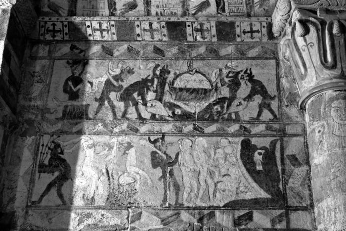

Los visitadores nocturnos
Autor: Silvia Castellanos
Fecha de publicacion: 2018-11-12

Siempre aparecen de noche, cuando ya estoy acostada, dispuesta a conciliar el sueño. Debe de gustarles molestarme a esas horas, justo cuando estoy quedándome dormida. Es ese momento en el que por la punta de los dedos de los pies entra un cosquilleo y uno sabe que va a quedarse dormido. Notar como a uno le llega el sueño es una sensación maravillosa. El cuerpo deja de pesar y flota sobre la cama. Todo está bien y de repente ya no recuerdas nada más. Todo está bien hasta que llegan ellos. Son negros, no muy grandes, delgados y tienen cuernos. Negros de color negrísimo, más negros que una sombra y más negros que la oscuridad. Normalmente viene uno cada vez aunque hay noches que aparecen varios, como una pandilla que hubiera quedado para salir y tomar algo en mi dormitorio. Al principio se sientan en el borde de la cama y se quedan quietos con los brazos en el regazo, tranquilos. Ni siquiera me miran pero yo sé que por dentro ya se burlan de mí porque sé que ellos saben que ya tengo miedo. De repente empiezan a moverse de forma extraña por la habitación y por la cama como si llevaran incorporada una luz estroboscópica. A partir de ese momento todo se precipita: saltan frenéticamente, me agarran de los tobillos y tiran de mí hacia ellos intentando sacarme de la cama. Me cogen de los brazos tan fuerte que noto sus huesudos dedos clavados en mi carne. Tan fuerte que me duele. Se suben sobre mi pecho mientras se burlan de mí porque saben que me están ahogando. A veces escucho sus carcajadas, otras resuenan sonidos guturales por la habitación. No sé quiénes son, ni por qué vienen a verme, no sé por qué disfrutan asustándome. Lo único que sé es que son más oscuros que la misma noche y que casi nunca puedo ver expresiones en sus rostros. Son siluetas, siluetas negras, sin ojos ni nariz ni boca. También sé de ellos que me dan mucho miedo, que cuando vienen a verme entro en un estado de pánico en el que no puedo moverme ni gritar y que cuando desaparecen de mi dormitorio puedo pasar horas con los ojos abiertos y tapada hasta la cabeza por la sábana porque me da miedo intentar dormir. La sábana, esa protección todopoderosa frente al mal.
Esto de mis visitadores negros no lo suelo contar a la primera de cambio. Imaginen, «Hola, soy Silvia y en ocasiones veo humanoides negros como el tizón en mi habitación, tanto gusto». Como siempre aparecen de noche tampoco me generan excesivos problemas en el día a día, más allá de la sensación de estar a punto de morir de un infarto producido por el terror durante su presencia y las ojeras y el sueño a la mañana siguiente. Minucias. Llevan conmigo desde mis once o doce años, que yo recuerde, pero al menos tienen la decencia de aparecer solamente en mi habitación. Es curioso porque se han trasladado a todas las habitaciones que he tenido desde entonces y un par de veces han conseguido encontrarme en habitaciones de hotel. Así les he visto siempre, de dormitorio en dormitorio, como si fueran el perfecto amante. Hasta que hace unos años me los encontré en un pequeño pueblo de Palencia. Íbamos de pueblo en pueblo, de iglesia románica en iglesia románica, de capitel en capitel y de friso en friso y llegamos a Barrio de Santa María.
Barrio de Santa María es una aldea de unos cuarenta vecinos cercana al pantano de Aguilar de Campoo y pedanía de este último municipio. Un buen puñado de casas blasonadas y su iglesia de la Asunción, románica y reformada en el siglo XVI, dan cuenta de que Barrio de Santa María vivió tiempos mejores. Pero la auténtica joya del pueblo es su ermita de Santa Eulalia. Esta se encuentra alejada del caserío, encaramada en un altozano y mirando al valle. Es un pequeño templo de una sola nave cerrado en su cabecera por un bello ábside cilíndrico y por una espadaña en su lado occidental. En el muro norte, bajo un tejaroz con nueve canecillos, se abre una portada con cinco arquivoltas que descansan en capiteles con decoración geométrica y vegetal. Una iglesia pequeña pero maravillosamente proporcionada y con una decoración escultórica exquisita que se data entre los siglos XII y XIII y que sirvió de parroquia a un pueblo desaparecido que se encontraba a sus pies. Y en Santa Eulalia me topé con ellos. Entrar en la ermita es relativamente fácil. En verano hay un horario de visitas pero una de las vecinas del pueblo tiene la llave y les abrirá encantada. Dentro quedan los restos de las pinturas de finales del siglo XIII que decoraron todo el templo. Todavía se distingue un Pantócrator en la bóveda del ábside rodeado por el tetramorfos. En el muro norte quedan restos de una última cena y en el muro sur están ellos. Recuerdo la primera vez que los vi allí: son ellos, son iguales, pensé. En el lado sur las pinturas representan los sufrimientos de los condenados en el infierno. Unos demonios oscuros echan a los pecadores a una olla que pende de una cadena sobre el fuego. Otros diablillos se afanan en avivar el fuego con el fuelle. Debajo de esta escena un demonio disfruta flagelando con un látigo con bolas a otros dos condenados que cuelgan boca abajo mientras otro acompaña a dos reos al interior de la boca abierta de un monstruo. Ahí están mis visitadores nocturnos. Con su color plano y sus cuernos. Cuando vienen a verme son más negros, eso sí, pero son esas siluetas. Paradójicamente, en las pinturas no parecen nada aterradores, son hasta graciosos. Unos demonios un poco naífs, sinceramente. ¡Con lo que me hacen sufrir en mi habitación!